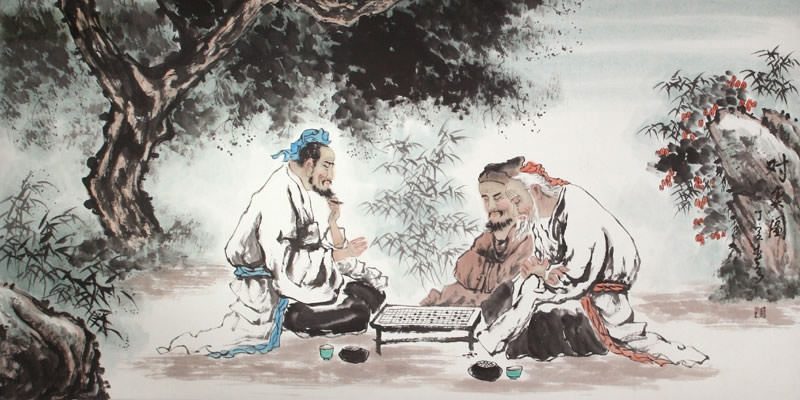

Wellington Go Club
A friendly space to learn and to play the ancient game of Go (a.k.a. baduk, weiqi).
 Like chess, Go is an ancient strategy board game for all ages. Go has elegant, simple rules, yet incredible complexity.
Like chess, Go is an ancient strategy board game for all ages. Go has elegant, simple rules, yet incredible complexity.
 It's free, and everyone is welcome including beginners. There is always someone who is happy to teach new players.
It's free, and everyone is welcome including beginners. There is always someone who is happy to teach new players.
About
What is Go?
Go (known as wéiqí 圍棋 in Chinese and baduk 바둑 in Korean) is an ancient strategy board game where two players aim to surround the most territory on a 19 x 19 grid. The rules are simple: two players place stones (white and black respectively) one at a time. If a stone is completely surrounded by the opponent's stones, it is captured. The aim is to capture more total territory on the board then your opponent.
A few moments to learn, a lifetime to master.
Given that the stones can be placed anywhere on the board in any order, and the large size of the board, the density of possibilities is far greater than in chess. Due to its vast complexity, Go was the last game in the world to remain unsolved by computers, right up until 2016 when Google DeepMind's AlphaGo AI defeated several world Go champions in widely publicised tournaments. Find out more about how to play in our links for beginners section.
About WGC
The Wellington Go Club (WGC) is a small but active and friendly community. The club has been around since [YEAR], with players participating in tournament such as the annual Wellington Open. We have a range of ages and experience, from high school students to seniors, but go is truly a game for all ages, and we can cater to teaching people of any age, even as young as 5 years old.
There is no membership fee to join, as most of our events are casual drop-ins at public venues. Some larger events may ask for a small koha to cover the cost of venue hire. For more information about the club, feel free to get touch with our current president, Fergus Roache, at fergusroachenz@gmail.com or by using the contact form below.
Events
All of our meetups and events are listed on our Meetup and Facebook group pages. Feel free to join to get regular updates!
The Wellington Go Club meets every Monday at 5:30pm, at Southern Cross Garden Bar Restaurant, located at 39 Abel Smith St just off Cuba Street in the Wellington CBD. They have great food and beverages for those wanting to grab a bite or a drink.
It is a very casual drop-in meetup, so there is no obligation to commit to every week. Currently, our members range from new beginners to 4 dan amateur.
Every last Sunday of the month from November to March, we have Stones in the Park at Frank Kitts Park in town. This is a casual get-together to play some go and to enjoy the sunshine. We meet at 2pm at the picnic tables near the playground.
Twice a year, we have a drop-in hat touranment where you can do some stuff. I'm just making up words here to fill space. No idea how this kind of tournament would work, I'm just mashing keys.
We welcome lectures from experienced players and visiting guests, as these are a key way to improve your skills. If you are interested in giving a lecture, please don't hesitate to get in touch.
Resources
Links for Beginners
The following is a list of the best resources for getting started with Go.
Books & Equipment
Please share any Go book titles that you find helpful. As for boards and stones, a few members of the club have their own sets which they bring to meetups. If you are comfortable with bringing your own set, that would be great!
Recommended books
- The Way To Go - Karl Baker: This is an excellent introduction to Go, one of the most widel y read in English. It is available for free online at the above link.
- Shape Up by Charles Matthews and Seong-June Kim: A great introduction to the functions of basic shapes, connecting, and cutting. This book is also available for free at the above link.
Wikis
Organisations
Play online
- Online Go Server: The most popular thing, some informtion about it here
Contact
Whether you are interested in playing, giving a lecture, proposing an event or just learning a bit more about Go, feel free to contact Fergus at hello@wellingtongo.org.nz, or fill out the form below.